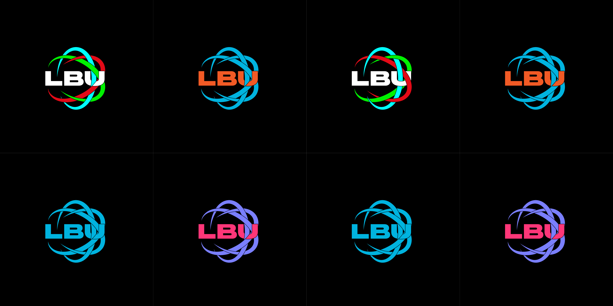

← Back to Portfolio

Design1
Design2
Current Design
Different font for Design1
Different color scheme for Design1
Different color scheme for Design1

Different color schemes for Design2
LBU Logo Redisgn
When I participated in LBU, I hated the logo. I think it looks disgusting. So, I tried to design my own version.
I made 2 designs. I think Design1 is better however I don't know it is really usable in the event. The second design is much more usable but very very boring.
But in my opinion, both designs are much much better than the current one.